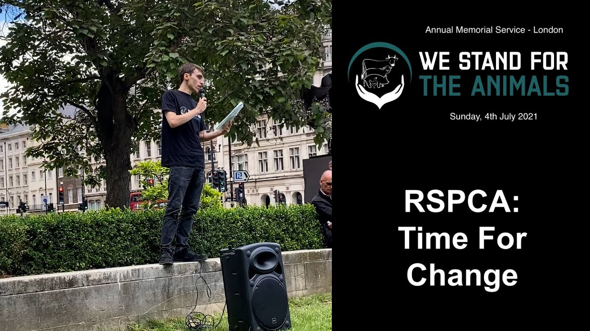
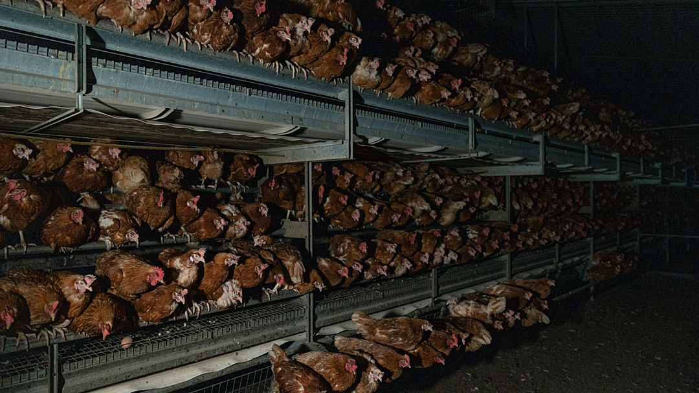
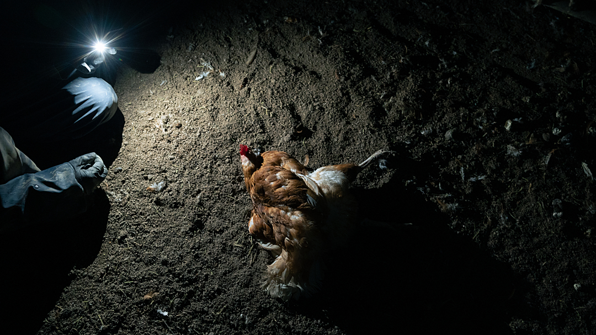
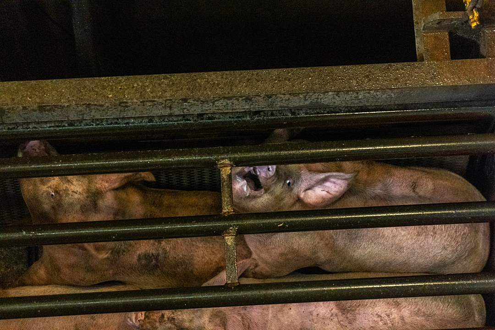
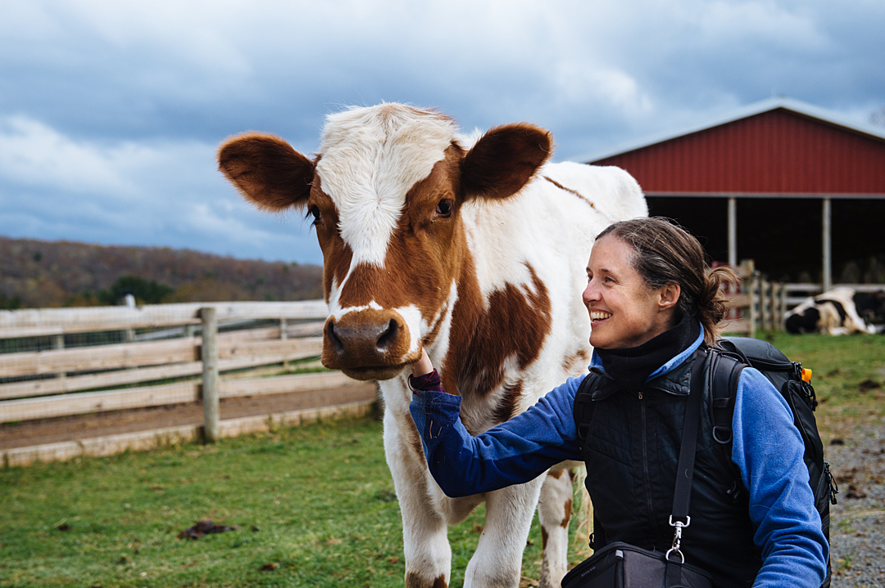

The following is the transcript of a speech given at an event organised by We Stand for the Animals in 2021. As such, citations are missing.
Like a lot of people, when I was a young child, I had a strong affinity for non-human animals. If you’d of asked me what job I would’ve wanted when I grew up, I would’ve told you I wanted to become a vet, because in my young mind taking care of animals in need, looking after them, protecting them - that seemed like one of the kindest and most fulfilling things a person could do, and I still think that today. And so you can probably imagine my reaction when I first learned of the charitable organisation known as the RSPCA. Royal Society for the Prevention of Cruelty to Animals. Now these guys I thought, these must be the good guys. Animal defenders and friends to all non-human creatures. But the truth wouldn’t become apparent to me until I was two decades older and wiser.
If the RSPCA are in the business of preventing cruelty as their name implies, why could their logo be found proudly displayed on the dismembered corpse of an animal whose life was stolen from them? What was going on here? You see the RSPCA actually allow their name to be used for a farm assurance scheme called RSPCA Assured. Visiting their website they state that “RSPCA Assured is the only assurance provider dedicated solely to animal welfare", and advise the reader to “look for our logo on products and menus across the UK". If you continue to browse this website you’ll even find a range of recipes for animal based meals - which to me is a sign of encouragement and approval in regards to consuming animal products and using animals as commodities.

Now for anyone who cares about the rights and wellbeing of non-human animals this assurance scheme is no doubt going to cause a negative reaction. Disbelief, anger, frustration, sadness, confusion. These are just some of the natural reactions one might have to learning that the largest and most well respected animal charity in the world is so content to see innocent animals murdered that they’ll even offer their name and branding to be used to advertise the products of this violence.
It is my strong belief that now is the time for the RSPCA to change, though their reluctance to do so is staggering. Since Spring of last year I began attempting to contact whoever I could at RSPCA Assured to start a discourse on the issue. I wrote emails, made phone calls, even started a petition and began to create videos, memes and other online content to bolster my presence in the hopes that someone would listen. Surely those working for RSPCA Assured shared my values, at last to a degree, and would be open to engaging. Well, this was where I learned of another major issue with the RSPCA - their commitment to silencing criticism.
At first communication did begin to happen, and I was even granted a lengthy conversation with RSPCA Assured’s head of farming, a lady by the name of [redacted]. Unfortunately this conversation only cemented just how dire the situation was, as [redacted] confirmed that her colleagues working at RSPCA Assured didn't care about the rights or wellbeing of animals in the slightest. [redacted] even made damning remarks about the farmers who are part of the scheme, yet when I pointed out that this was all the more reason for the RSPCA to part ways with these animal abusers she refused to listen to reason and became erratic and hard to communicate with. Since this conversation any further attempts at communication with RSPCA Assured have been futile. Emails are left unreplied to and any comments left on social media are deleted and profiles are blocked. I don’t think I need to elaborate on just how harmful and problematic the action of silencing critics online and creating an echo chamber of opinion can be.
For the rest of my time talking to you all today I want to briefly outline five points that I think are crucial for you to understand why I personally am so determined to see the RSPCA change their tune when it comes to how animals ought to be treated. These points in the order I’ll cover them are speciesism, practices, incentive, influence, and mutual benefit. I hope after hearing these five points you’ll be in agreement with me that the time for change is now.

So first point, speciesism. Let me actually start by quoting the RSPCA here, these words are taken from their website. “Our vision is to one day live in a world where all animals are respected and treated with compassion. And that is what we work towards every day.” That’s a direct quote. Not a world where dogs and cats are respected, not a world where wildlife is respected, but a world where all animals are respected and treated with compassion. Now believe me I would be bent over laughing at the absurdity and falsehood of this quote if the surrounding context were not so morbid and upsetting. To give a basic example of how disproportionate their commitment to promoting kindness to all species is we need only look at the messaging they promote to the public.
Go online and search for social media posts made by the RSPCA about dogs and you’ll see they do a fantastic job of promoting adoption. So, encouraging kindness and respect for dogs - check. Now May 4th is international respect for chickens day, so in the world of social media it is the ideal time to encourage kindness towards these animals as well. On May 4th last year, just after I had begun my RSPCA Vegan campaign, RSPCA Assured posted a recipe for a chicken pie. I do not think their timing was coincidental. We can see more clearly the RSPCA’s speciesism at play as we move into my second point - practices.
For this point I want to talk about just a small selection of practices that the RSPCA either advise or condone, and as I do so I would like for you to keep in mind the previous quote about treating all animals with respect and compassion. As we’ve just mentioned chickens, let’s start with them. I think most if not all of you here today are well aware of what goes on behind closed doors in the egg industry and the unfortunate fate of the animals who find themselves part of that system. It might surprise some of you however to learn that the RSPCA is content with even the most egregious practices within the egg industry.
The culling of male chicks is performed in the UK primarily using one of two methods; maceration or gassing. Again I’m sure those of you here today know this already, but just in case, a macerator is essentially a large blender. A spinning blade which these freshly hatched animals are thrown into to be disposed of as waste. The RSPCA state “when carried out effectively and competently, this method may be considered more humane than gassing”.
Not a position I think they’d be comfortable with if the animal in question were a puppy or a kitten instead. Let me also highlight their preposterous use of the word humane, a word synonymous with compassion and benevolence, when describing slicing a harmless baby bird into ribbons - all done for the acquisition of the taste of an egg. Of course all the other moral concerns with egg production associated with the female birds are present in any RSPCA Assured operation as well, such as the selective breeding and eventual violent slaughter of birds no longer deemed profitable.
Other heinous crimes to animal rights condoned and even encouraged by RSPCA Assured include the gassing to death of six month old pigs for the production of bacon and other known carcinogens, where these young, intelligent, social and emotional beings’ final experience of existence is anything from 15 seconds to over a minute of screaming and thrashing in agony in a dark dungeon as they burn from the inside out.

The RSPCA even have written guidelines on how to treat an unborn calf showing signs of life after their mother was just bled to death for her flesh to be sold. Any fetus showing signs of life is to be removed from the maternal carcass and I quote "it must be immediately killed with an appropriate captive bolt or by a blow to the head with a suitable blunt instrument". That’s the world's largest animal charity giving instructions to beat baby animals to death.
I could talk for hours about the things they condone and engage in that would make any true animal lover sick to their stomach but I will leave it at just these examples, and please remember everything I’ve just described these animals going through will of course result in a product with that RSPCA Assured stamp of approval to convince consumers the product in question somehow came from humane treatment of a sentient being now dead and wrapped in plastic.
Which brings me to my next point; incentive. Why would they do this? Prevention of cruelty to animals should entail speaking out against their use as commodities, but instead they directly engage with and encourage animal suffering where it pertains to the production of material goods. Why is that? The answer should come at no surprise, it’s money. If we look at the assurance scheme we can see that not only do animal farmers need to pay for their products to get the Assured stamp, but the levy involved actually means that the more animals killed by a farmer signed up with the scheme, the more money the RSPCA Assured scheme generates as a result. Earning money off the exploitation of the very animals they claim to protect. Anyone can see the Assured Scheme is driven by greed and not by need.
With my final two points, namely influence and mutual benefit, I hope I can offer an alternative narrative to one of greed that hopefully benefits everyone. I think we’re all aware of the influence and popularity of the RSPCA. In fact if they were not so influential and well trusted the use of their name for the assurance scheme wouldn't hold any weight. Just like I did for many years, the majority of people still see the RSPCA as the good guys in the context of animal cruelty. As an organisation they have a current annual revenue of over £140 million. We’re used to seeing their commercials, everyone knows their name, and almost everyone holds them in high regard. And how do they use this attention to help farmed animals? They don’t. So many eyes are on them and so many have admiration for them as an organisation, yet they fail to capitalise on this to bring about massive positive change.
If a bare minimum amount of time and effort were offered by the RSPCA to promote veganism as the lifestyle to live by it would make the efforts of activists like myself look almost pointless in comparison. They simply have more influence than I ever could and in fact I struggle to think of any other single body in their uniquely advantageous position. They already have core values that suggest veganism. Protecting animals from cruelty. Promoting kindness to all animals. These are vegan values, and yet they will not make that jump.

It’s natural to feel angered by all this, but I like to keep in mind the principle of Hanlon’s Razor, which is the rule of thumb that states "never attribute to malice that which is adequately explained by stupidity". I believe the people working for RSPCA and RSPCA Assured are not malicious people, they actually do care somewhat about how animals are treated. I just think they cannot remove the blinders they are wearing put there by our carnist culture. The idea of not using and abusing animals for food seems so foreign to them that it isn’t even entertained, so instead they just look for ways to gain from it. I want you to help me remove those blinders for the sake of all the animals whose lives could be spared by a change in the RSPCA’s approach to farmed animals. And this is where it ties into the mutual benefit, as steps towards change from them would be in their best interest as well as the animals’.
Right now we are in a very strange place in time. Just recently we as a nation legally acknowledged animals as sentient beings and yet we continue to subject them to lives of suffering and misery and even rob them of those lives for no justifiable reason. We all have experienced first-hand what can happen when even a virus with a low mortality rate emerges and yet we continue to factory farm these animals as well, increasing the risk of future pandemics. We eat meat and dairy knowing they can harm our health, and we devastate both our oceans and our lands in our continued drive to kill and consume more and more animals. Nothing, not a single thing about our current actions makes any sense, and the rise of veganism reflects that. People are changing, and change can not be reversed.
How long before it’s not just me who is appalled by the RSPCA’s lack of action, and their engagement with and encouragement of animal farming, but instead it’s 5% of the population. And what about when that number continues to grow, how will the RSPCA hold credibility then? Before they are exposed in the near future and their reputation is permanently damaged, it’s time to join the change. In fact, I personally believe they stand to earn the most public favour by becoming forerunners in the animal rights movement.
Animal rights is one of the fastest growing social justice movements of our generation, and if the world’s largest animal charity intends to spend this moment remaining silent, or in the case of the Assured Scheme, encouraging the consumption of animals, then truly there is no future for the RSPCA as a respected organisation. I do think this would be a great loss, as despite the atrocities they engage with they are still those most capable of protecting animals as well - it’s time for them to change, and it’s up to us to inspire or even demand that they do.
Thank you.